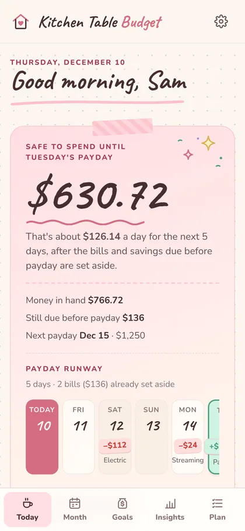
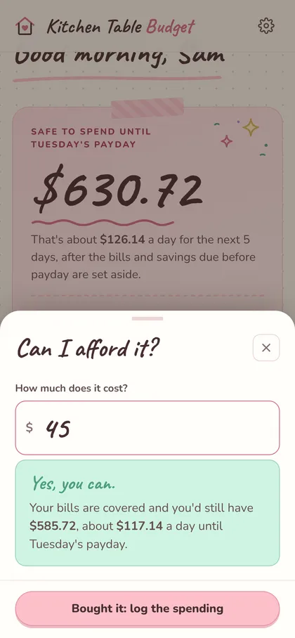
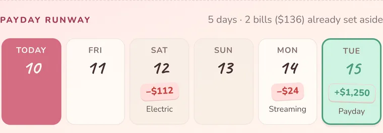

YNAB alternative · no subscription
A YNAB alternative you pay for once, that never asks for your bank login
YNAB is a great method, but at $14.99 a month (or $109 a year) it is a subscription forever. If you mostly want to know what you can safely spend today after the bills and savings are set aside, an offline budget app you buy once can do that job.
The demo runs in your browser with a sample family. No sign-up, nothing saved.


YNAB vs. an offline budget app, honestly
| YNAB | Kitchen Table Budget | Free spreadsheet | |
|---|---|---|---|
| Price | $14.99/month or $109/year | $12.99 once | Free |
| Bank connection | Optional import | Never | Never |
| Account / sign-up | Required | None | Google or Microsoft account |
| Where your data lives | YNAB's servers | On your device only | Your cloud drive |
| "Safe to spend today" | Through budget categories | Front and center | Build it yourself |
| Bills grouped by paycheck | Not by default | Yes | Build it yourself |
| Debt payoff date (snowball or avalanche) | Loan planner | Yes | Build it yourself |
| Sync between devices | Automatic | Manual backup file | Automatic |
| Automatic transaction import | Yes | No, you type it in | No |
YNAB pricing as listed on ynab.com in November 2026: $14.99 per month or $109 per year, with a 34-day free trial.
What the offline app does
1. Tells you what is safe to spend today
Your cash now, minus every bill, debt minimum and savings amount still due before your next payday. That one number is what most families actually check.
2. Shows every bill between now and payday

Bills land under the paycheck that pays them, so you can see which paycheck covers rent and which one covers the car payment.
3. Plans your debt-free date
Enter your debts and an extra amount per month. The app simulates every month with interest and shows your debt-free date with the snowball (smallest balance first) or avalanche (highest interest first) method.
4. Sinking funds, reminders and insights
- Savings goals for Christmas, car repairs and birthdays, set aside from every paycheck.
- A calendar file with every bill and payday, with a reminder the evening before (works with Google, Apple and Outlook calendars).
- Insights: where the money went, plan vs. actual, and who in the family spent it.
- CSV export and a backup file you can keep anywhere.
Who should stay with YNAB
Choose YNAB if you want transactions imported automatically from your bank, live sync between partners' phones, or YNAB's workshops and method. Those things cost money to run, and a subscription pays for them.
Choose the offline app if…
- you are tired of paying for budgeting every month,
- you don't want any app holding your bank login,
- you are happy to type in bills and spending (a few minutes a week),
- you budget paycheck to paycheck and want the "safe to spend" number first.
Questions
Is there a YNAB alternative without a subscription?
Yes. Kitchen Table Budget is a one-time $12.99 purchase on Etsy. No monthly fee, no account, no bank login.
Is my financial data private?
The app is a single file that runs in your browser and stores data in that browser on your device. Nothing is sent to a server, and there is no account to hack.
Does it work on my phone?
Yes, in any modern phone, tablet or computer browser. Each device keeps its own copy; you move data with the backup file.
Can I try it before buying?
Yes. The free demo is the full app with a sample family, so you can click through every screen.
What do I get after buying?
An instant download: the app file and a short Start Here guide (PDF) that walks you through setup in about 10 minutes.
Stop paying monthly to know what you can spend
Try the demo first. If it fits your family, it's $12.99 once.